intro! and what this post aims to do
This is a hand hold-y article. This is meant to build intuition around a topic that can be very very complex and can often leave you battered, weak, and frail. I aim not to do that! In fact, basically the whole article is:
(Though there ended up being much cool stuff here, so may be worth it for you to come back to later.)
Instead, I hope to give a single, small kernel of truth that is actually used in higher level mathematics, but also simple enough that you’ve already used it in your life and will become one of those things you can’t unsee (as those are the easiest ideas to build on top of 👼)
I’d like to do this by:
- showing how this neat mathe-magical tool is already working and helping you in your own life
- how this same tool is used by higher level mathematicians to solve hairy problems
- ideally while keeping it NON-ANXIETY INDUCING and actually pretty simple (along with some historical context and ‘smell the flowers’ tidbits)
~ Off we go!! ~
MATH and BART
San Fransisco is pretty cool. We have public transit (and maps of it) 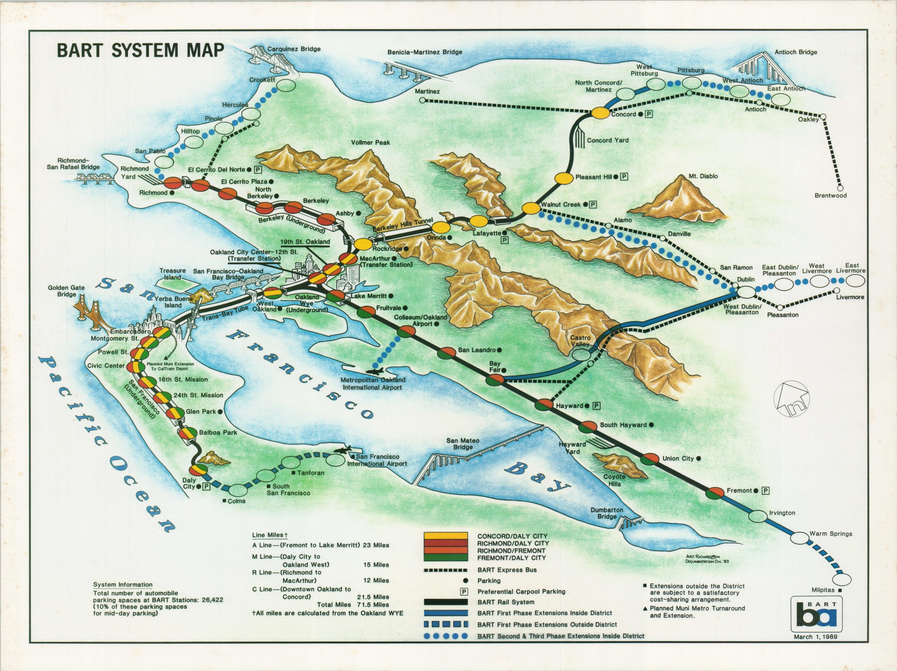
- BART Map #1 (source: https://curtiswrightmaps.com/wp-content/uploads/map_32.35x24.22_02-27-24_inv005986-scaled.jpg)
{kind=link}
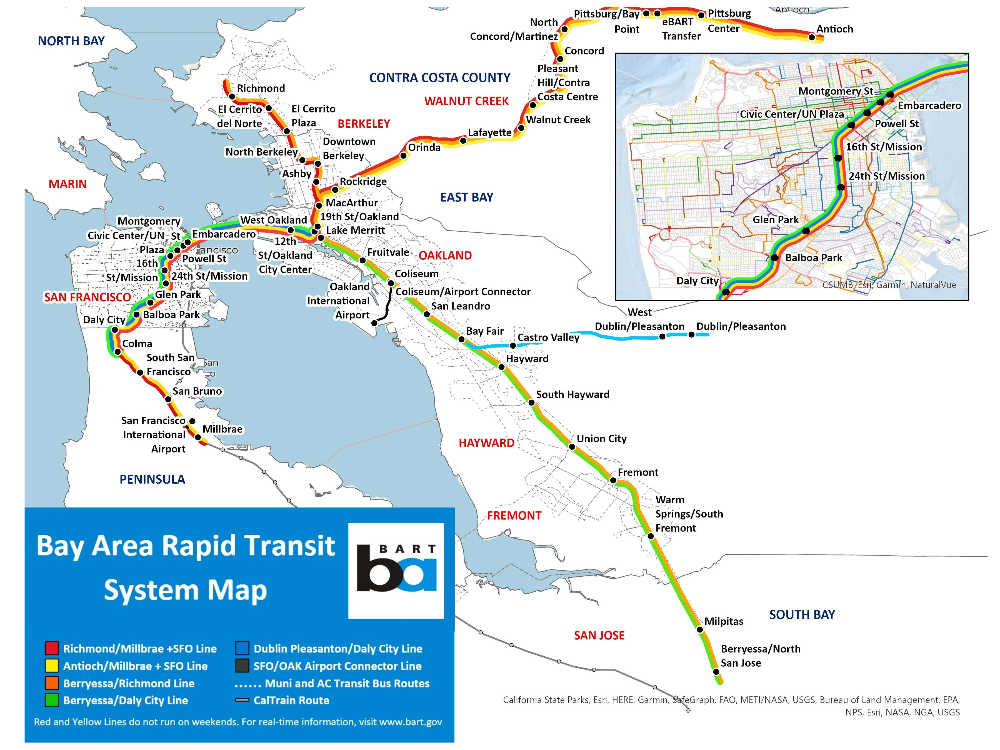
{kind=link}
I prefer this one though since it’s a bit easier to read 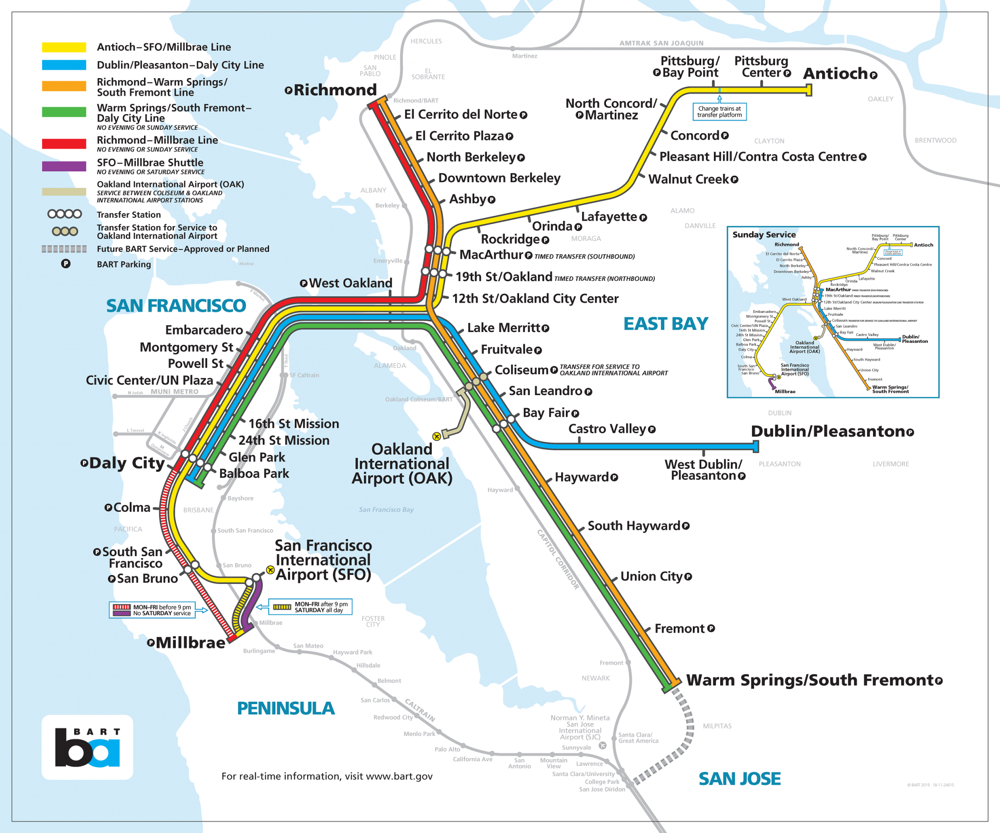
- Map #3 (source: https://s.hdnux.com/photos/01/12/00/20/19399708/3/rawImage.jpg)
{kind=link}
And here’s an even further stripped down version of that same map: 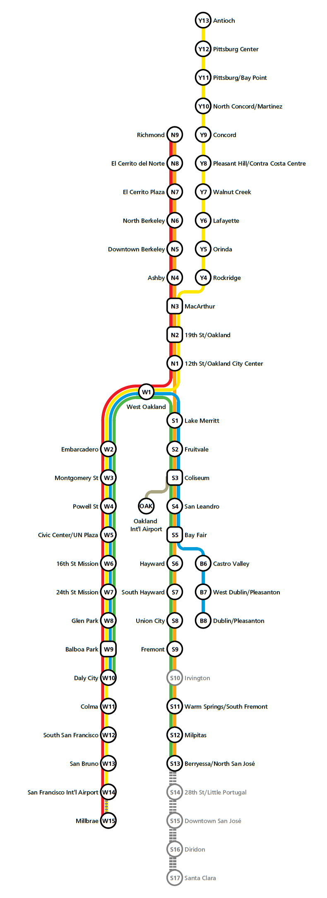
{kind=link}
There’s presumably some advantage to having these stripped down maps, but let’s compare a couple more just to see: 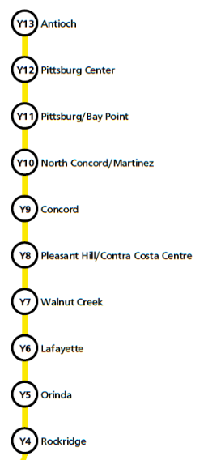 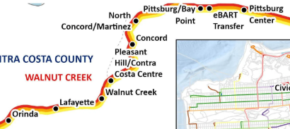
- Map #5 (left) Map #6 (right)
For both of these, count the number of stops between Pittsburg/Bay Point and Lafayette. One is basically a number line, the other is a trail to traverse. (This may seem tedious, but we’ll be using maps later for a similar reason.)
When you look at any of the squiggly areas of Map 6 (or any of the info heavy maps) it adds some cognitive tax to make sure you haven’t missed a stop or gotten off track or whatever else; with the straight line you just count the dots and you’re done.
You can further test this with the previous maps; try counting on map 1 how many stops it is to get from Colma (Red line) to West Dublin/Pleasanton (Blue), El Cerrito del Norte (Red) to Concord (Yellow), or OAK Airport (Grey, right hand side of the Bay) to Glen Park (Red). Actually try one of these examples! It’s your qualia at stake.
Then, try any of these on map 3 or 4 and at least I feel how much easier it is to locate these things. But why is that?
🎼 “What’s the use?” 🎵
There’s basically two things that are happening here:
- we remove non-essential info
- we retain essential info
Quiz time. While I’m riding the BART do I need to know:
- Q: What mountain ranges (Map 1) are in the Bay to get to SFO? A: Hell no
- Q: That North Concord is to the West of Pittsburg/Bay Point? A: HELL no
So we can get rid of that!
But what do you need to keep? You must keep the connections that BART actually makes in real life (like North Berkeley connects directly to Downtown Berkeley in each of the maps and SFO didn’t magically connect to OAK airport somehow), otherwise the map is now out of touch with reality. KEEP THE CONNECTIVITY.
We can move them in whatever shape we want to, but as long as we don’t 1. create / destroy stops, or 2. create / destroy connections then we can use it to accurately plan on the BART.
That’s it!
Concept Exposition
there are math terms concepts hidden here, let’s make them obvious so we can compare the actual math to our BART example. (don’t worry too much about knowing EXACTLY what everything means, just make associations)
Homeomorphism (big boi)
When we take one map and change it to another (“same”, but “different”) map, that’s called a “homeomorphism”. This can roughly be broken into:
- homeo = “same”
- morphism = “shape, form, structure”
“Same structure” == they have the same connections.
We could talk about homeomorphisms by saying “Map 1 and 2 are homeomorphic to each other” or “Map 2 is a homeomorphic transformation of Map 1”. And we can say this for all four maps, they’re all homeomorphic to each other. They’re all “the same” in some way (same connections!), but they’re also all “different” from each other (different shapes and details and stuff).
Invariant:
“Same structure”, but some things are different…but some things are the same? Yes! and those things that stay the same are the “invariants” because they…don’t vary. MATHEMATICIAN YOU ARE! Again, in the case of these maps, what’s not changing are the connections or the connectivity of said maps. In every map you can get from North Berkeley to Downtown Berkeley, Downtown Berkeley to Union City, Union City to Balboa Park. Since those connections are the same in every map, we can use every map to plan our travel. Invariant!!
Why are these useful to know about?
Practically, look at the maps above and see how some are easier to work with than others. More specifically, we can change problems and remove information so that they’re easier to work with, while still having our representations be true. For example, Fermat’s Last Theorem was unsolved for 350 years, put into a different form and then became possible to solve.
This one looks quite simple, but again it was unsolved for 350 years before someone made it “simple” enough to be solveable at all. The problem: “Fermat’s Last Theorem states that there are no three positive integers a, b, and c that can satisfy the equation for any integer value of n greater than 2. This theorem was first proposed by Pierre de Fermat in 1637 and was famously proven by Andrew Wiles in 1994.” (Quote generated by DuckDuckGo with sources: wiki, quanta)
If you’re already math inclined, U-Substitutions have probably made your life much easier for calculating integrals, using Fourier transforms for signal processing or solving differential equations, and likely countless others.
I’ll hereby designate “these things” as…
”Problem Reformations”
Just as it sounds, put a problem in a different form and it can sometimes become much easier. Ok! ((note to self to link to cognitive disonance article with Car Bomb))
Just those three things will carry us through: Homeomorphisms, invariants, and problem reformations.
”You think that’s a bridge you’re crossing?”
- from…Morpheus (who was a homie)
And a quick aside on the Greek God Morpheus, he assumed forms and structures! """ According to Ovid “no other is more skilled than he in representing the gait, the features…""" -source
""" Ovid called Morpheus and his brothers…the Somnia (“dream shapes”), saying that they appear in dreams “mimicking many forms”. """ -source
Back to the math! The simple simple origin lore is that a real smart guy wanted to figure out how to cross some bridges (but only a single time). Ahem:
“The Seven Bridges of Königsberg is a historically notable problem in mathematics. Its negative resolution by Leonhard Euler, in 1736, laid the foundations of graph theory and prefigured the idea of topology…The problem was to devise a walk through the city that would cross each of those bridges once and only once. ” -source
{kind=link}
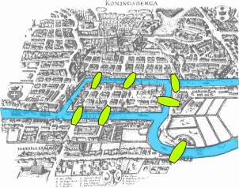
Now ask, this is a city map…how do you do math on this? That indeed is a difficult question! In fact, “The difficulty [Euler] faced was the development of a suitable technique of analysis, and of subsequent tests that established this assertion with mathematical rigor. ” -source
Or in other words, in order to answer this question, he had to create new math techniques to work with it. Not just a simple thing unfortunately! But, the tool that Euler had created is what allows us to take this City Map and turn it into the graph with lines, create a solution based on THAT and trust that our graph solution would still apply to the Bridges of Königsberg.
”But the map looks pretty simple, why not just trace it out?”
(Just as a reminder, this probably looked simple too, )
And if you were to guess how many possible paths there were, how many would you guess? 20? 500? 20,000? This math.stackexchange user counts it at 372 (but can be reduced to 282), which still sounds hellish! 372 routes and then you find out that it’s actually impossible to cross any of them only a single time. There’s no possible route! I’d feel a bit let down (and then imagine if we didn’t have math and you had to walk that. Makes you grateful 🫂)
On top of that, these bridges are a small graph. Imagine operating on someting like this:
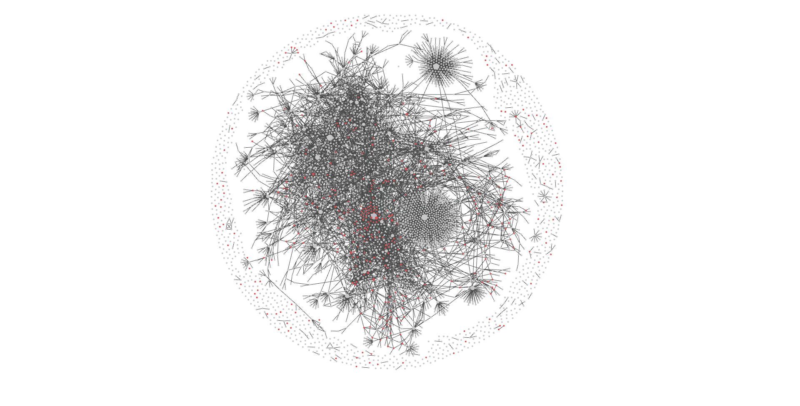
- (source: my obsidian vault, nbd)
So how do the tools help solve this?
Again our tools: homeomorphism, invariants, and problem reformations.
Problem Reformation
“Euler first pointed out that the choice of route inside each land mass is irrelevant and that the only important feature of a route is the sequence of bridges crossed…This allowed him to [eliminate] all features except the list of land masses and the bridges connecting them.” -source
As a result he came up with something like this: 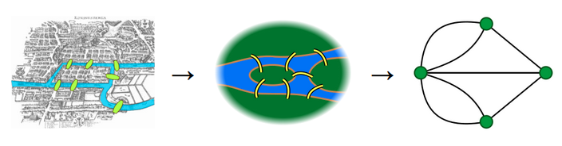
(Which we view similarly to our own maps…) ((TODO))
To align our BART maps with Euler AND modern terminology, “one replaces each land masses with an abstract ‘vertex’ or node, and each bridge with an abstract connection, an ‘edge’ -source
- “vertex / node” = land mass = BART stop
- “edge” = bridge = train tracks
The next thing he realizes is that if a node / land mass / green dot has an odd number of connections, then you end up stuck there! Here’s a visual:
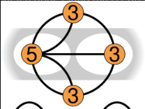
- source
- note: this is the same as the green dot graph just above, just with numbers and slightly different shaped, but it’s a homeomorphism of that graph 😜
Looking at one of the “3” nodes, you could cross it once (2/3 bridges crossed; one to get in, one to get out), but then if you visit it again there’s no path for you to leave from! Not all is lost, if you have two dots with odd numbered connections, you could start at one then end at the other. But! If you were to have more than two of these, you’d start at one then be stuck at another before you could get to the final; it can’t work.
”The answer becomes trivial…”
Seeing this, the answer becomes extremely easy to find:
- make a graph
- count the connections on each node / dot
- this is called the “degree of a node”, as in “the nodes in the graph above have a degree of 3 and 5”
- count the number of odd degree nodes, if over two, the graph doesn’t work!
You could even imagine a much bigger graph…
- (source: my obsidian vault, nbd)
and creating a program that counts:
- how many connections
- number of odd degree connections
- computes
if num_odd_degrees > 2 == False - and then you have it solved. you could chatGPT that pretty quickly.
But how do we know? How can we be sure we didn’t fudge something?
It’s much easier to verify for the Bridges problem when there were only four nodes, but my obisdian graph has over 3.5k nodes (nbd), and god only knows how many connections have been made; do we have proof that nothing got lost in the details?
What if we looked at a different graph to see what made it different? Fortunately, it’s pretty simple, and we’ve already covered it; connectivity from earlier. The graph will be the same as long as you don’t
- create / destroy stops (nodes), or
- create / destroy connections (edges)
Because if that doesn’t happen, how else could the graph change? Here’s an interactive artifact to play with and ask yourself, “is this graph actually changing? do I only care about connectivity?”
But this is still visual, it’s not enough. Can we go further? Yes!
Return of the Invariant
First, if these are the same graphs (just moved around):
- 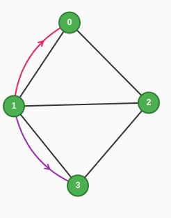 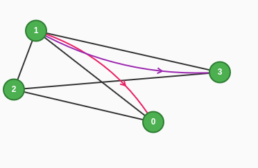
What are the mathematic properties that stay the same? And also, how am I supposed to feed either of these into an algorithm? Feed an image into a number algorithm?
We turn these graphs into data structures; where we can change a map of Königsberg into this graph, and all of the following will be true for them (again, as long as we don’t create or destroy the nodes or edges).
Data Structures
1. Adjacency List
Node 0 connects to: [1, 2]
Node 1 connects to: [0, 2, 3]
Node 2 connects to: [0, 1, 3]
Node 3 connects to: [1, 2]
2. Edge List
Edges: (0,1), (0,2), (1,2), (1,3), (2,3)
3. Adjacency Matrix (1 means connected, 0 means not connected)
0 1 2 3
0 [ 0 1 1 0 ]
1 [ 1 0 1 1 ]
2 [ 1 1 0 1 ]
3 [ 0 1 1 0 ]
4. Degree Sequence
Node degrees: [2, 3, 3, 2]
5. Incidence Matrix
e1 e2 e3 e4 e5
Node0 [1 1 0 0 0]
Node1 [1 0 1 1 0]
Node2 [0 1 1 0 1]
Node3 [0 0 0 1 1]
We can also look at an interesting example to see what happens when the graph actually does change, with the same bridges!
When bad graphs go good
In WWII (and various other changes) throughout the years, a couple of the bridges of Königsberg were destroyed; how did that change the graph? From https://www.datawrapper.de/blog/euler-bridges-konigsberg, “But with only five bridges left in Königsberg, today it is actually possible to find an Euler walk through the city.” They then show:
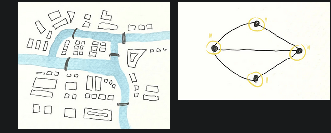
Different graph! and with different essential characteristics.
(WORKING IN PUBLIC; WORK IN PROGRESS)